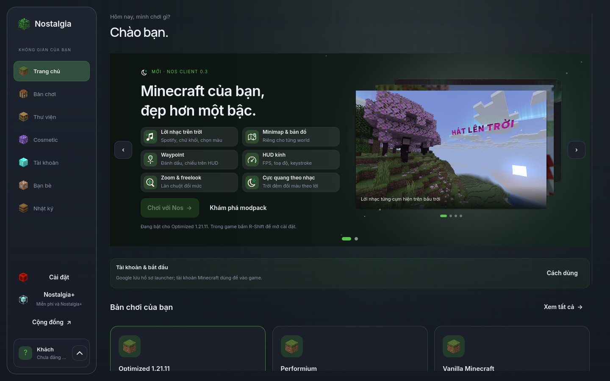
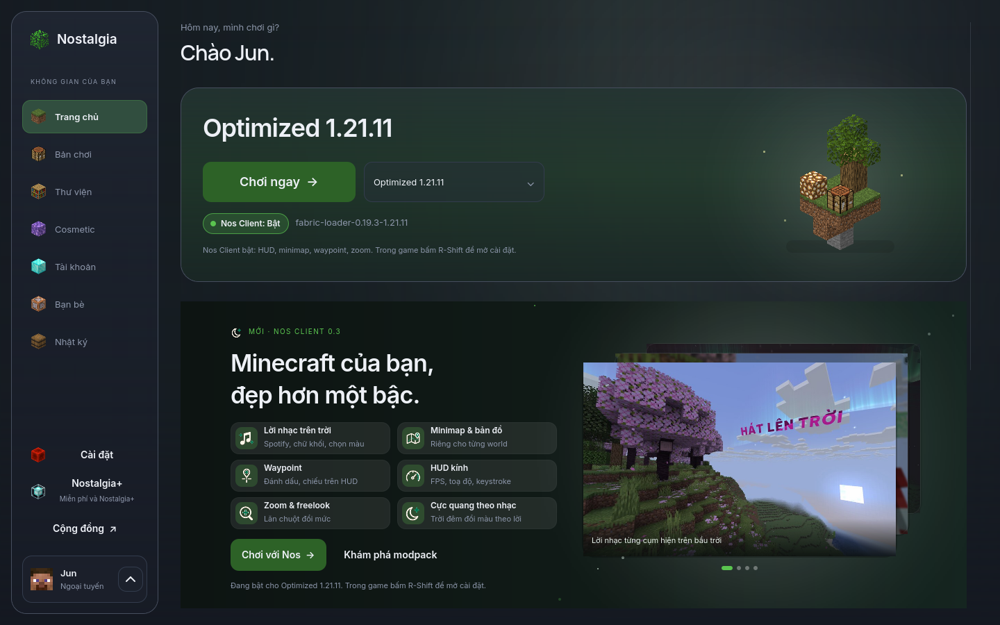
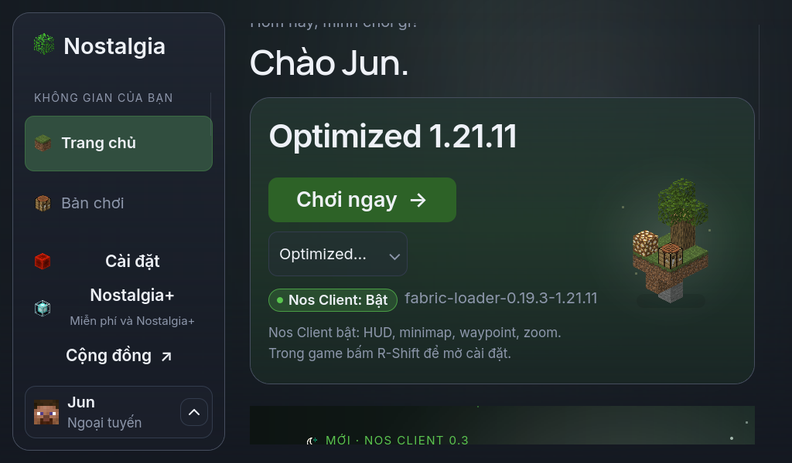
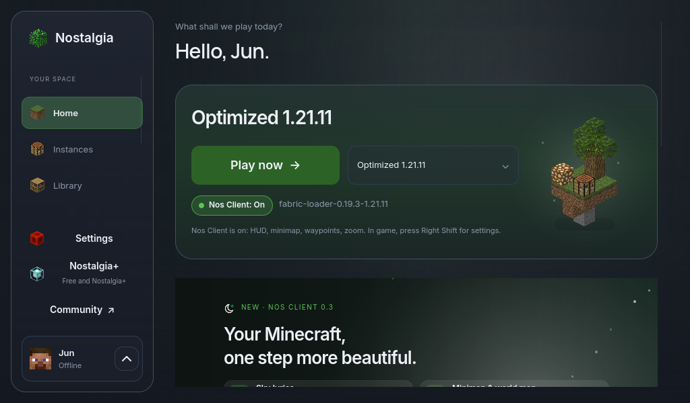

Trang chủ: nút Chơi lên đầu
Trước: nút Chơi nằm ở slide cuối, phải lật mới thấy

Sau: khối Chơi luôn ở đầu, nút to, đổi bản chơi ngay cạnh

Cửa sổ 1024×600, cỡ chữ 150%

Cửa sổ 1024×600, tiếng Anh
